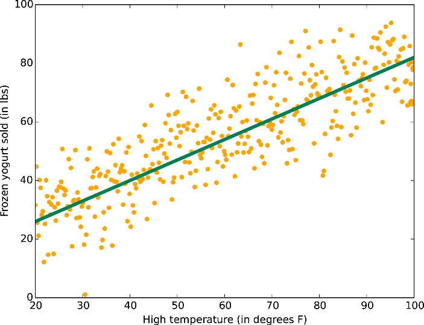

Introduction to Machine Learning
A Whirlwind Tour
Created by Donald Whyte / @donald_whyte
Originally made for:

Feature Space
- A feature is some property that describes raw input data
- An input can be represented as a vector in feature space
- 2 features = 2D vector = 2D space
- Training data is used to produce a model
- f(x̄) = mx̄ + c
- Model divides feature space into segments
- Each segment corresponds to one output class
Use trained model to classify new, unseen inputs
Choosing a Suitable Model

Get in Touch
uk@startupbus.com